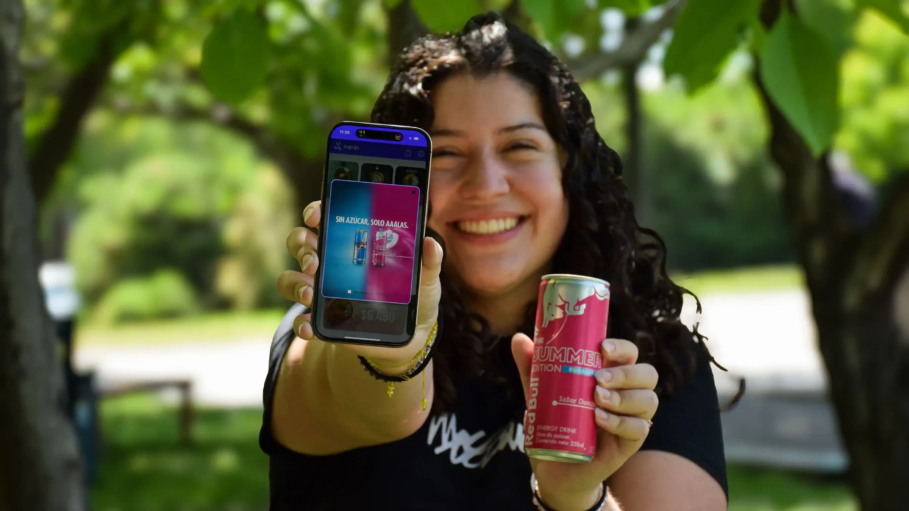
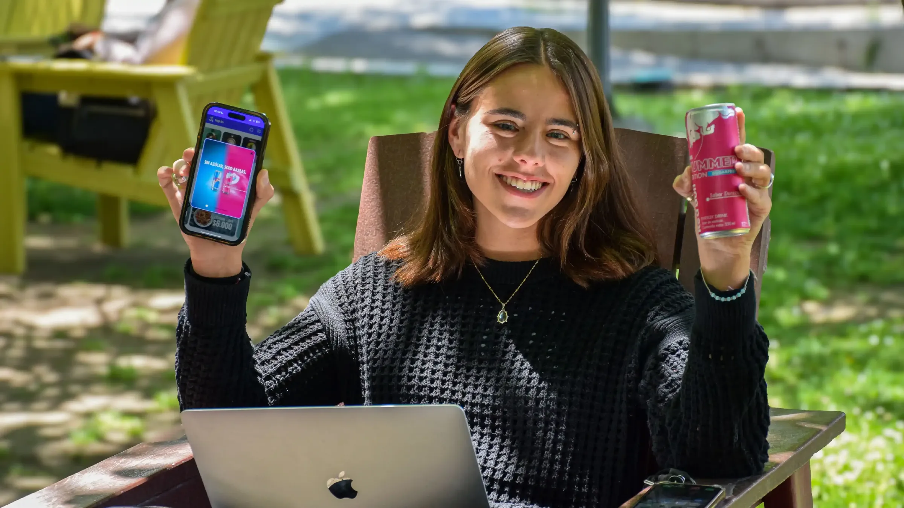
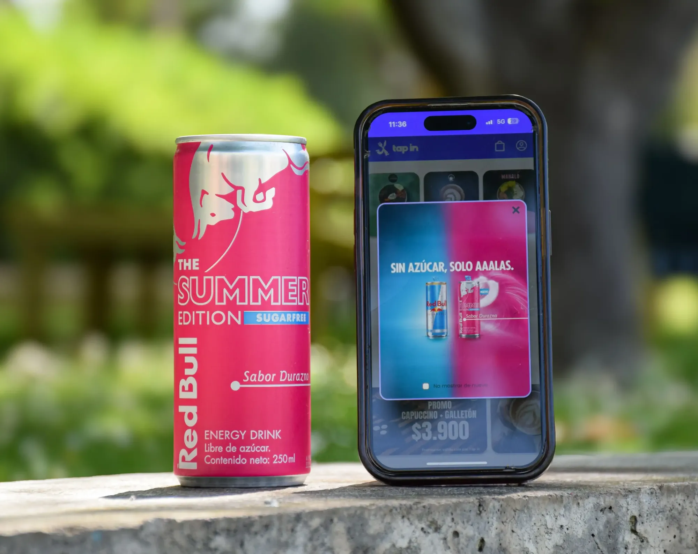
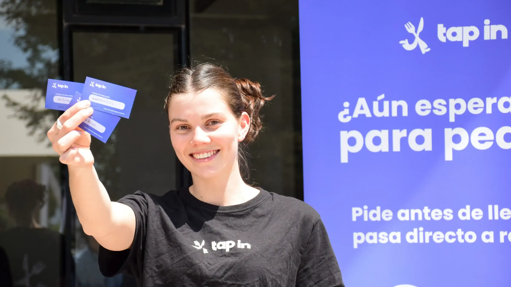

Campus UC · 2025Red Bull
- 01La promo, en la app
- 02En el pasto, con la app
- 03Lata y promo
60 QR en los locales de la UC y promociones con Red Bull y Banco de Chile dentro de la app
Campus UC · 2025



Stand en la UC · 2025



60 QR en los locales de la UC y promociones con Red Bull y Banco de Chile dentro de la app
60 QR en los locales de la UC y promociones con Red Bull y Banco de Chile dentro de la app
60 QR en los locales de la UC y promociones con Red Bull y Banco de Chile dentro de la app
60 QR en los locales de la UC y promociones con Red Bull y Banco de Chile dentro de la app
Las fotos son buenas, pero la galería actual las achica y las recorta: se ven como miniaturas.
Cinco maneras de mostrar las dos activaciones. Elige con el selector.